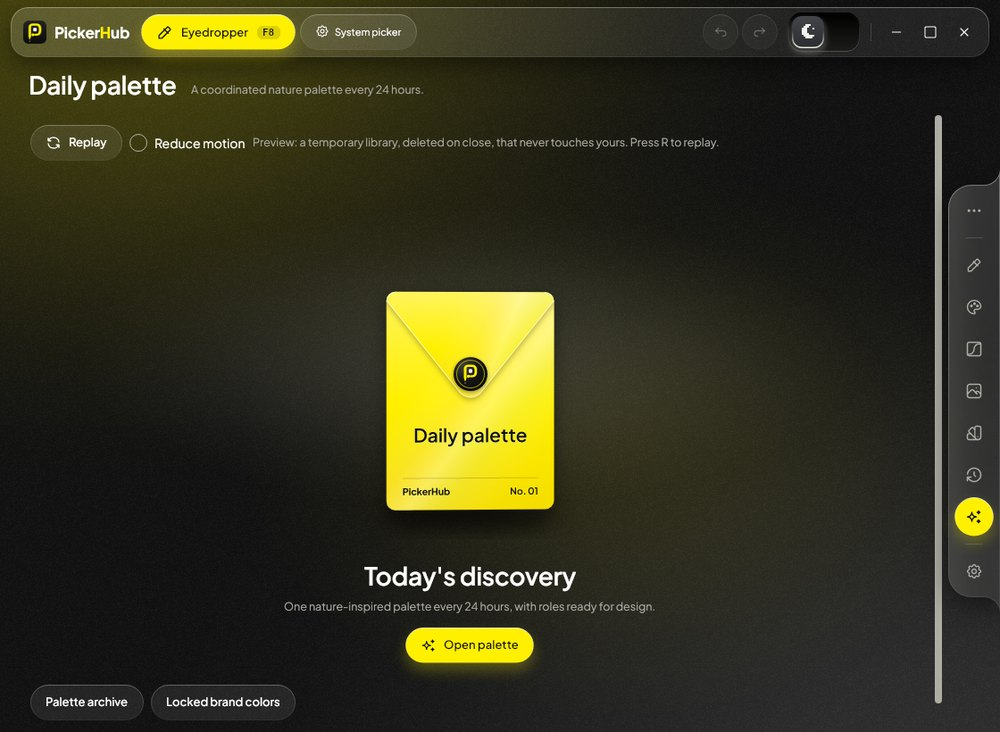
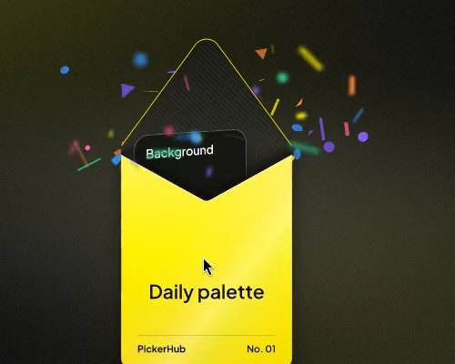
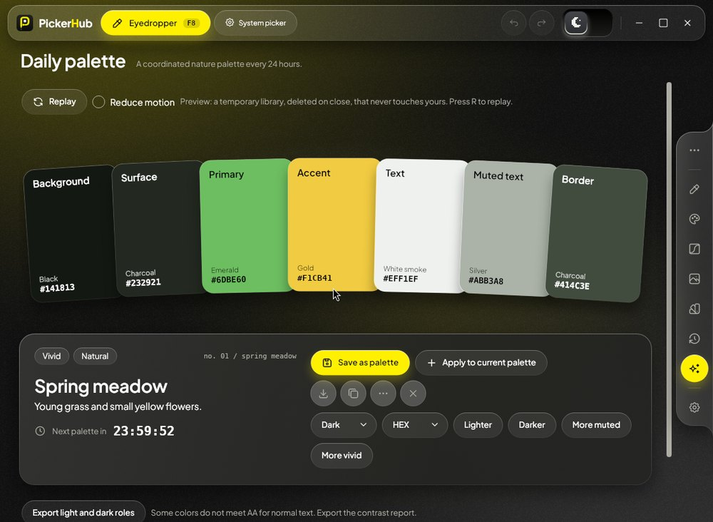

Greenhouse café · Spring 2027
فطورك حيث ينمو المرج.
Marj is a glass greenhouse with a kitchen in the middle. Herbs are cut at the table, honey comes from the hives on the roof, and every season the room changes color with the beds around it.
The launch campaign
PickerHub exported Spring meadow as a light set and a dark set of the same seven roles. The poster and the order screen use the dark set; the menu uses the light set. This page itself follows your system theme with the same two sets.
Color system created in PickerHub
Marj's color system, its roles, both themes, the contrast checks and the illustration greens, came from PickerHub 1.0.0 in the order below.
01
PickerHub deals one nature palette every 24 hours in a sealed envelope. Opening it dealt Spring meadow, "young grass and small yellow flowers", tagged vivid and natural.


02
The palette arrives as roles, not loose swatches: background, surface, primary, accent, text, muted text and border. PickerHub tunes each one separately for a light and a dark theme, and names every color.

| Role | Light | Dark |
|---|
03
PickerHub's contrast checker measured each text and fill pair against WCAG. One pair failed: the light theme’s background color on its accent, at 3.09:1. So the accent never carries light text here: in the light theme it holds the dark text color (4.56:1), and in the dark theme dark text on the accent reaches 11.42:1.
04
The greenhouse illustration stays inside the system. Its grass is PickerHub's monochrome harmony of the primary green, five steps from shade to tint; the flowers are the accent. The order screen's thumbnail uses the same scale.
Monochrome harmony of #6DBE60
Analogous harmony, kept for the summer menu
05
"Export light and dark roles" gives both sets in one step. These are the exact values behind this page, written as CSS custom properties.